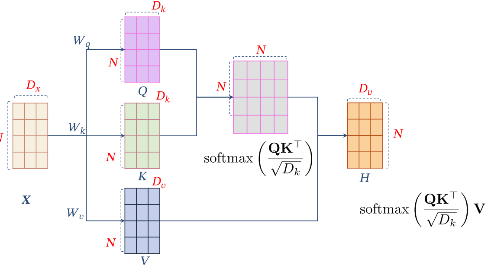

Transformer学习记录
前言
Attention is All You Need是transformer的开山之作。论文相关的Tensorflow的代码可以从GitHub获取，当然也有很多人对它进行了二次开发.
文中，我试图把模型简化一点，逐一介绍里面的核心概念，希望让初学者也能轻易理解.
机器翻译

transformer一开始提出主要是用于翻译工作,所以我们不妨从翻译的原理开始认识它.
首先,我们可以观察到翻译是由两部分encoder和decoder组成的;这里encoder会吸收需要被翻译的句子,也就是Machine Learning而decoder会输出对应的机器学习
具体的讲,整个翻译工作分为以下几步:
语句处理
对于一段话而言,词语本身的意思和词语之间的相对位置同样重要.所以翻译器会首先通过token embeddings获取每一个词的本身的意思对应的向量和词语在句子位置中对应的向量;并且把两者加起来.这样每一个词就可以用一个向量同时表示意思和位置.对应的,一个句子就可以用一个矩阵表达.
处理句子矩阵
然后,我们把刚刚得到的句子的向量矩阵$X$传入encoder中,随后会输出一个含有句子所有信息的编码句子$C$.$X$和$C$形状完全相同都是$n\times d$,这里的$n$表示句子中含有的单词的数量,$d$表示一个单词的向量维度<文中采用$d=512$>.
翻译
现在我们把encoder输出的$C$传入decoder中,也就是把需要被翻译的语句的信息传入.同时传入一个特殊符号"$“,它表示一句话的开始,随后decoder就会根据$C$和”$“输出第一个汉字"机”.
然后,“$+机"会代替原来的$的位置作为输入和$C$经过decoder输出"器”.
这样周而复始,直到输出另一个特殊的代表句子结束的符号"#".
下面,我们就具体介绍transformer是怎么实现这个过程的.
Transformer的整体架构

可以看出,transformer的和刚才的翻译器在形式上是类似的,下面就具体展开说说每一部分是在做什么.
Transformer的输入
input Embedding
Inputs,也就是我们输入需要被翻译的文字,在通过embedding vector之后会映射到一个高维的空间中,也就是说词的"feature"被提取了出来,并且被放在了一个矩阵中,不妨称之为词义矩阵
positional Encoding
获得句子中的每一个单词的位置信息,同样形成了一个矩阵,不妨称之为位置矩阵.然后把词义矩阵和位置矩阵相加,得到的就是encoder的输入.
具体的位置矩阵的算法有很多,这里介绍一种比较简单的方法:
$$
PE_{(pos,2i)}=\sin(\frac{pos}{10000^{\frac{2i}{d}}}),
PE_{(pos,2i+1)}=\cos(\frac{pos}{10000^{\frac{2i}{d}}})
$$
这里的$PE$表示词的位置信息;$pos$表示词在句子中的位置;$d$表示词的维度,也就是词的"feature"所需要的度量的数量;$2i$就是偶数维度,$2i+1$就是奇数维度.采用这种计算方法及足够简单,又很好的满足了几个条件:
- 保证了PE和词的大小一样,也就是词义矩阵和位置矩阵大小一样
- PE可以适应验证集中出现比训练集中句子更长的情况
- 有利于获得相对位置的信息,比如两个单词相距$k$,知道一个就可以快速得到另一个:$\sin(pos+k)=\sin(pos)\cos(k)+\cos(pos)\sin(k),cos(pos+k)=\cos(pos)\cos(k)-\sin(pos)\sin(k)$
进入encoder
把input embedding 和positional embedding相加就能得到表示句子的矩阵$X$,它随后进入了encoder
Self-Attention(自注意力机制)
在进入encoder之前,有必要先介绍以下自注意力机制,这也是transformer的精髓所在,再看一眼整体架构.
请注意那些浅橙色的色块,这里的Self-Attention正是我们接下来要关注的,而且这个结构在encoder和decoder中是一样的.至于"Multi-Head Attention"和"Masked Multi-Head Attention"本质上也是一样的,只是多了一些修饰.
Self-Attention的结构
首先看一个简单的例子了解什么是注意力.如下图,所谓注意力就是一个词和另一个词的联系的紧密程度.这里绿色的The就是我们要考察的的对象,我们想知道它和句子中的其他的联系的紧密程度如何,所以我们用The的表示向量$\vec x_{the}$和句子中其他单词的表示向量$\vec x_{others}$做内积.然后使用softmax进行归一化,也就是得到The和其他词语之间的关系的打分.
然后,我们利用这个’打分系统’对句子中的每一个词打分并相加,就得到了The在整个句子中的占有的注意力
事实上,我们可以看出,由于"The,weather,is,nice,today"中的每一个词都要有相同的操作,所以可以把整个过程看作是矩阵乘法,也就是:
$$
Attention=softmax(X\cdot X^{T})\cdot X
$$
这里,输入和输出的矩阵的形状是一摸一样的,只是说,根据整个句子的"句意矩阵"对句子中的每一个词的"表示向量"做出了调整.而且,由于是自己和自己相乘,所以这个过程就是自注意力机制.
同时,这个过程和人类的语言习惯也是相统一的,同样的词语必然需要根据不同的句子赋予不同的意义,比如"苹果手机"和"收集苹果".

Self-Attention in Transformer
然后我们看看transformer是如何应用self-attention的.

为了增强自注意力的效果,在正式的计算之前,先使用矩阵$W_Q$(查询矩阵),$W_K$(键矩阵),$W_V$(值矩阵),对input($X$)进行修正.
$$
Q=X\cdot W_Q\
K=X\cdot W_K \
V=X\cdot W_V
$$
这样得到了三个不同的矩阵Q(查询),K(键值),V(值).这里的$Q,K,V$相比于$X$行数不变,列数有变化;等价于单词的数量不变但是衡量每一个单词的特征的数量发生了改变.
然后,这三个被传入上图所示的机制,计算实现Self-Attention:
$$
Z=Attention(Q,K,V)=softmax(\frac{Q\cdot K^{T}}{\sqrt{d_k}})\cdot V
$$
下面这个图或许可以更好的表达整个过程.

这里,为了防止内积过大,因此除以$d_k$,也即是$K$的列数.同样的,整个过程没有改变X的行数,只是改变了列数.这里的$Z$就是self-Attention的输出矩阵.
Multi-Head Attention
在上一步，我们已经通过 Self-Attention 计算得到输出矩阵 $Z$，但是这还不够.其中的一个原因在于,这样得到的句子的信息不够,在准确率上有所不足.解决这个问题的本质就是要从句子中提取更多的信息,这里一个朴素的想法就是,‘多读几遍’.而Multi-Head Attention就是这样的想法.

从上图可以看到 Multi-Head Attention 包含多个 Self-Attention 层，首先将输入$X$分别传递到 h 个不同的 Self-Attention 中，计算得到 h 个输出矩阵Z。这里是 h=8 时候的情况，也就是会得到 8 个输出矩阵Z。
然后把输出的$Z_i$拼接到一起,再使用一个矩阵做一个线性变化,使得multi-head attention前后的矩阵大小不变.类比的讲,我们可以很自然的想到,这个线性变换(Linear)就相当于把好几次阅读得到的信息融合在了一起.
下面的这张图有一点小问题,最左边的矩阵的$X$和$D_X$写反了,中间的小矩阵倒是写的是正确的;不过这个图看起来更直观,所以还是放在这里.

Multi-Layer Self-Attention
这个想法我觉得太自然不过了,知道考虑考虑我们的MLP就可以明显的看出网络数量上升的好处.不所以这里不是想讨论这样的机制,而是觉得这个图很有意思,我第一次没有看懂,感觉值得拿出来聊聊.

上图中,每一个大矩形包裹的就是一个Self-Attention in Transformer,一个六边形表示一个词和其他词的注意力,仔细看看可以看到每一个六边形的红色点是不一样的.在一个Self-Attention in Transformer实现之后,使用某种非线性函数$f(\cdot)$再把输出传到下一个Self-Attention in Transformer中,如此循环几次即可.
Encoder
在讨论完Self-Attention之后我们总算可以正式的进入Transformer了.
上图左边浅橙色的部分就是我们的encoder,或者说encoder block,因为我们要把这个结构反复使用$N$次.
之前我们已经着重讲过了Multi-Head Attention了,所以这里把目光放在Add & Norm和Feed Forward上.
Add
Add也就是残差连接,用公式表达就是$X + MultiHeadAttention(X)$,这样的操作在RNN中就已经见到了,好处是避免了反向传播中的梯度消失.
这里就可以看到保持$Z$和$X$的形状一样的好处了.
Norm
归一化就更没什么好说了,就是高斯/正太化了.$LayerNorm(X+MultiHeadAttention(X))$
Layer Normalization 会将每一层神经元的输入都转成均值方差都一样的，这样可以加快收敛。
Feed Forward
Feed Forward 层比较简单，是一个两层的全连接层，第一层的激活函数为 Relu，第二层不使用激活函数$ReLu(XW_1+b_1)W_2+b_2$
我来组成头部
Multi-Head Attention, Feed Forward, Add & Norm 就可以构造出一个 Encoder block，Encoder block 接收输入矩阵 $X$，并输出一个矩阵 $C$.通过多个 Encoder block 叠加组成 Encoder。
第一个 Encoder block 的输入为句子单词的表示向量矩阵，后续 Encoder block 的输入是前一个 Encoder block 的输出，最后一个 Encoder block 输出的矩阵就是编码信息矩阵 C，这一矩阵后续会用到 Decoder 中。
Decoder
上图右边浅橙色的部分就是我们的decoder,或者说decoder block,因为我们同样要把这个结构反复使用$N$次.
这里虽然右两个但是本质上是一样的,都是我们的Multi-Head Attention,只是输入的$X$和之前的不一样了.
概况的说就是:
- 第一个 Multi-Head Attention 层采用了 Masked
- 第二个 Multi-Head Attention 层的K, V矩阵使用 Encoder 的编码信息矩阵C进行计算，而Q使用上一个 Decoder block 的输出或者输入$X$计算
这里不妨想一想为什么有"Multi-Head Attention 层的K, V矩阵使用 Encoder 的编码信息矩阵C进行计算"这个安排.
Mask Multi-Head Attention
Mask,遮挡,我感觉这是很符合直觉,但是我想不到的东西,就是听了别人的介绍感觉平平无奇,但是自己去想绝对想不到的东西.
它来自一种现实,就是我们做翻译的时候,只知道翻译之后的内容的前文而不知道后文.想象你正在看一本英文书,英文的内容自然是完整的,但是中文的意思却是一个一个顺序出现的.所以,在计算注意力的时候就要屏蔽掉这个词语和那些句子中在它后面的词语的联系.感觉这里有点绕
不知道你还记不记得注意力的概念,其实就是一句话中,一个单词和其它所有的单词的联系的紧密程度,一般的度量就是灵感单词的表示向量的内积的大小,由于句子中的每一个词都需要得到自己的注意力,所以实际计算的时候是句子的词义矩阵和他本身的转置的点乘.
但是,前文也说过了,在transformer中,为了更好的表现,我们使用线性变换把$X$转化为了$Q,K,V$,而且还说过$Z=Attention(Q,K,V)=softmax(\frac{Q\cdot K^{T}}{\sqrt{d_k}})\cdot V$.不知道这里你能不能看出来哪个部分是注意力矩阵这是我现造的词.
其实是$Q\cdot K^{T}$,我们只要再用一个mask矩阵,和他做点乘就好,也即是$Q\cdot K^T\cdot mask$.
那么,什么样的mask矩阵可以满足这样的要求?如下所示:
$$\begin{bmatrix}
{1}&{0}&{\cdots}&{0}\
{1}&{1}&{\cdots}&{0}\
{\vdots}&{\vdots}&{\ddots}&{\vdots}\
{1}&{1}&{\cdots}&{0}\
\end{bmatrix}$$
这样一来,我们的attention就会演变成这样:$Attention(Q,K,V)=softmax(\frac{Q\cdot K^{T}\cdot Mask}{\sqrt{d_k}})\cdot V$
我们得到一个 Mask Self-Attention 的输出矩阵 ，和 Encoder 类似，通过 Multi-Head Attention 拼接多个输出然后线性变换,得到第一个 Multi-Head Attention 的输出Z，Z与输入X维度一样.
事实上,在我要写Multi-Head Attention-2的时候,我忽然意识到,这里可能会产生一点歧义;就是,Mask Multi-Head Attention的输入.
我想说的是,Mask Multi-Head Attention的输入和encoder没有显示的关系,
第二个decoder block之后自然会有隐式的联系!Mask Multi-Head Attention的输入中的$Q,K,V$是一个矩阵$X$变换得到的!
Multi-Head Attention-2
好吧,Multi-Head Attention-2也很好理解.唯一值得注意的就是其中 Self-Attention 的 $K, V$矩阵不是使用 上一个 Decoder block 的输出计算的，而是使用 Encoder 的编码信息矩阵 $C$ 计算的.
不知道你还记不记得之前的问题.
这里不妨想一想为什么有"Multi-Head Attention 层的K, V矩阵使用 Encoder 的编码信息矩阵C进行计算"这个安排.
其实不难回答,想想看我们现在的$Q,K,V$分别是怎么得到的:
$$
Q=X\cdot W_Q\
K=C\cdot W_K \
V=C\cdot W_V
$$
再想想看,什么是注意力:$Attention(Q,K,V)=softmax(\frac{Q\cdot K^{T}}{\sqrt{d_k}})\cdot V$我们相当于考察了输入的$X$,比如是一个start标志,和需要被翻译的句子中的内容的关系;然后根据这个关系,对被翻译的句子中的内容进行调节.
这样做的好处是在 Decoder 的时候，每一个输出的单词都可以利用到 Encoder 所有单词的信息.
Softmax
结束了Decoder,因为它也是一个"Multi-Head",所以先做一个线性变换,使大小和一开始一样.然后使用softmax完成打分.
再后面就和MLP的后续没有任何区别,和decoder输入的$X$比较,得到loss和正确率,选择合适的优化器求梯度等等.
总结
-
Transformer 没有利用单词的顺序信息的，需要在输入中添加位置 Embedding.
-
Self-Attention 结构是Transformer 的重点，其中用到的 Q, K, V矩阵通过$X$线性变换得到.
-
Multi-Head Attention 中有多个 Self-Attention，目的是捕获单词之间更多的联系.